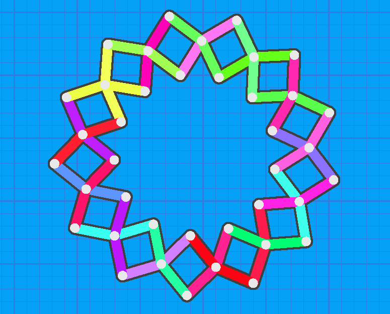
For this project, I wanted to remodel and replicate the hoberman mechanism that can be found in the expanding toy of the same name. Such as linkage consists of a number of angled bars connected with revolute joints in a scissor fashion. An arrangement of seven such links is quite pleasing:
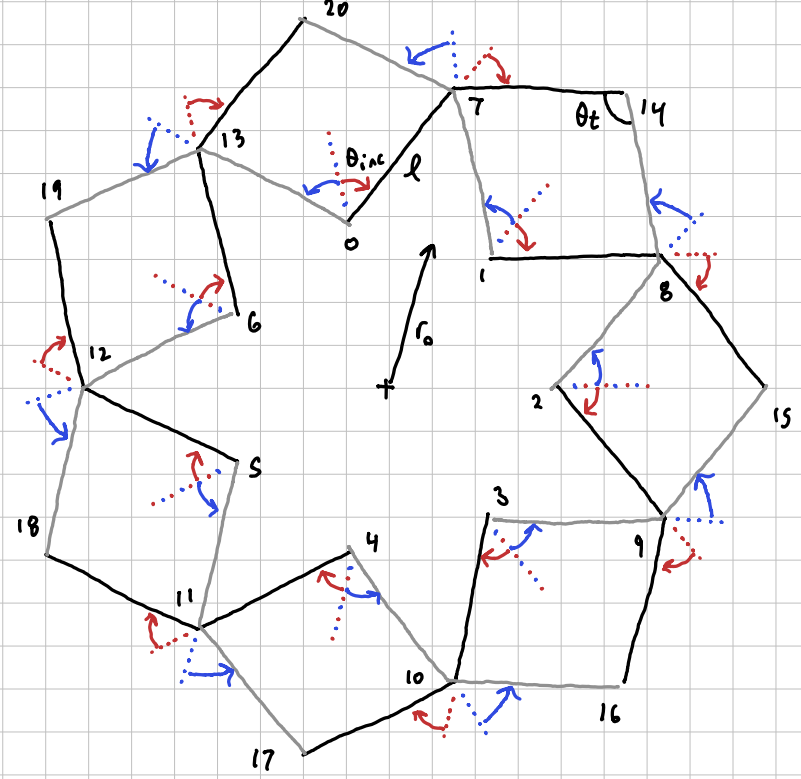
The math relating the number of links and their corresponding angle is as follows:
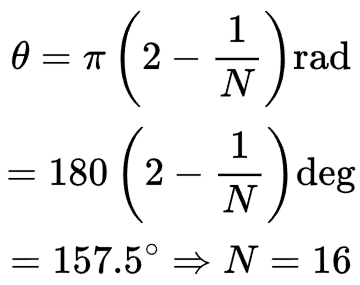
But, theory can only take us so far. So I made it with legos:
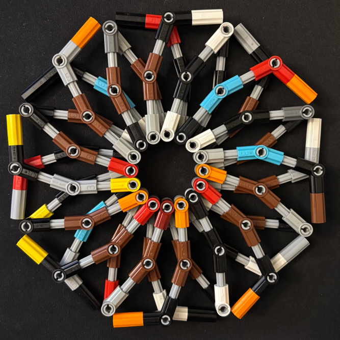
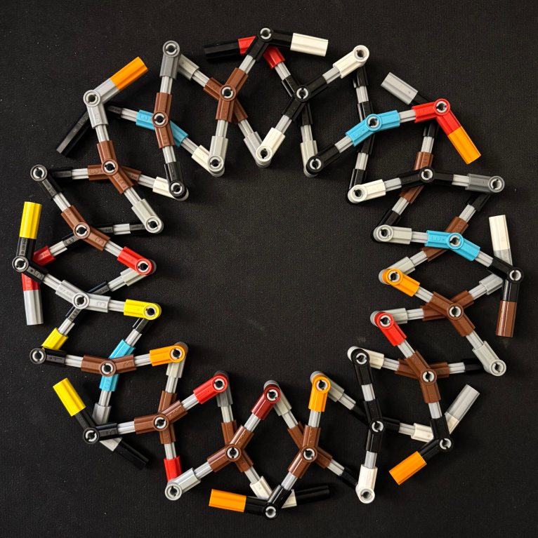
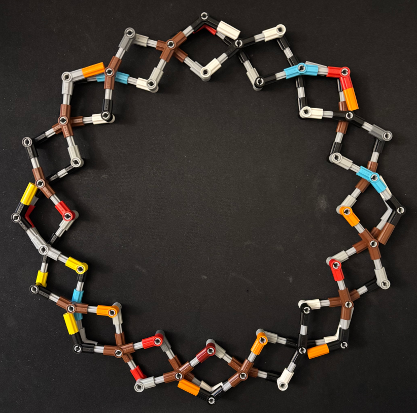
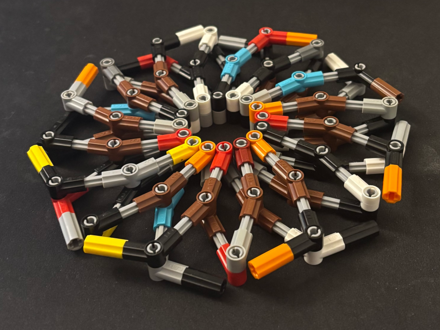
Note that the linkages purposefully can't extend fully, as when you try to compact them after the fact, they buckle.
As far as modeling this system goes, I first took to a single link:
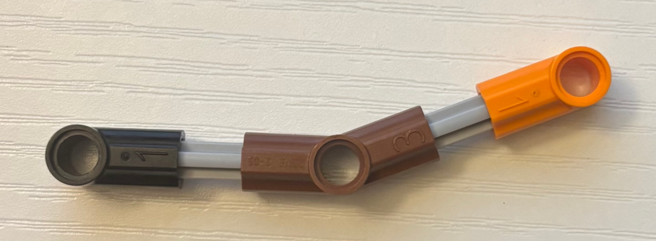
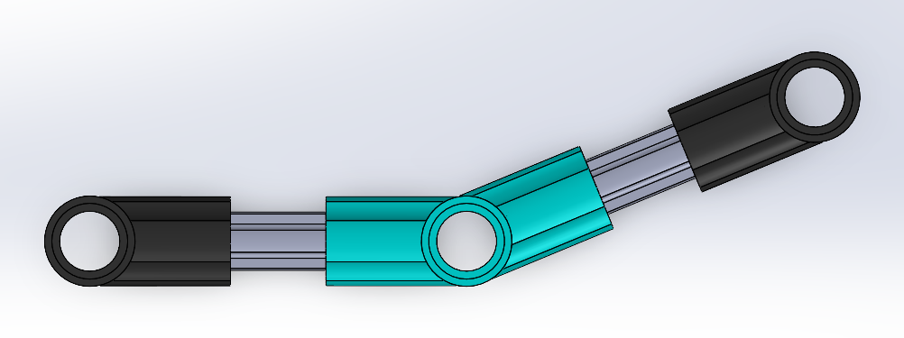
Then combining sixteen of those on the top and bottom with some connecting pins yeilds the following assembly:
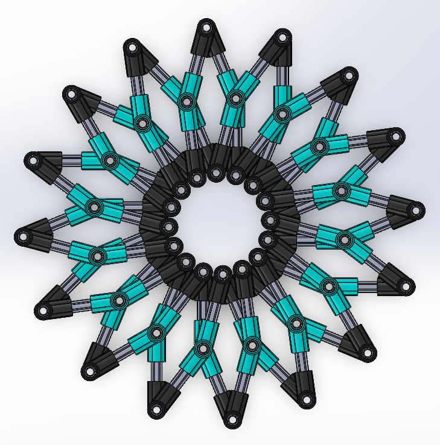
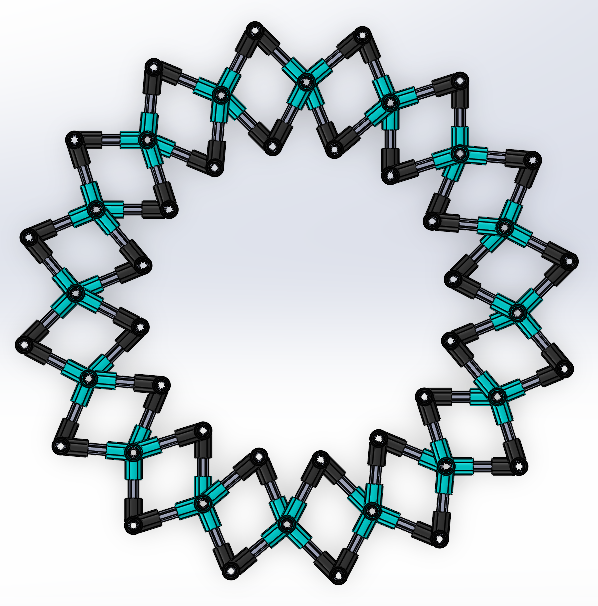
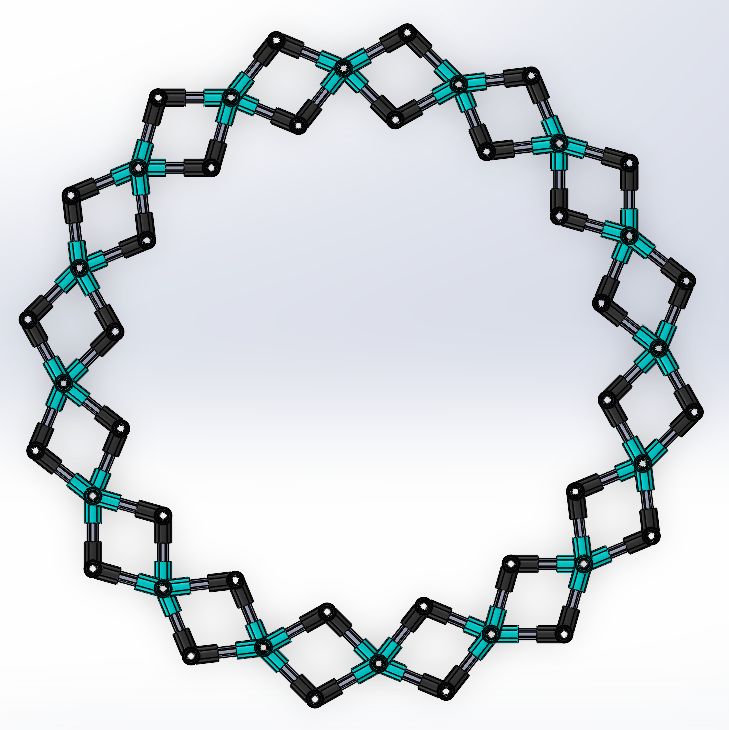
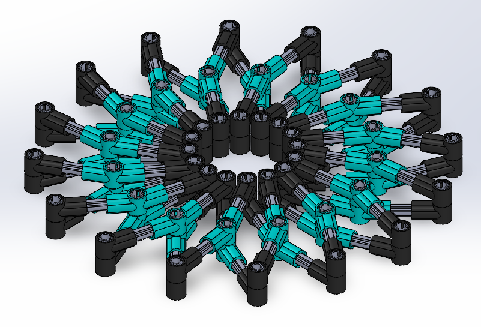
It's cool to see them side by side:
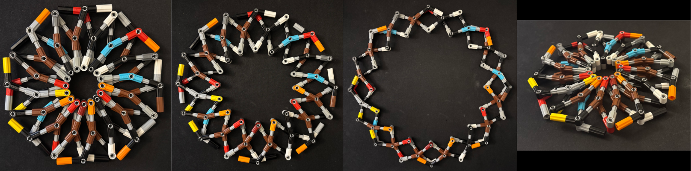
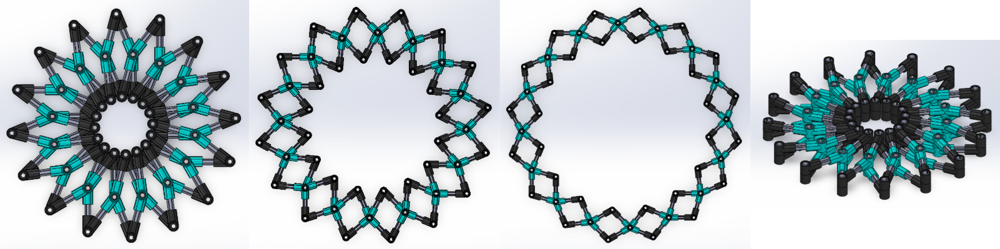
I thought it would be nice for you to be able to interact with this system. So, I've gone ahead and made a simulation of such a linkage mechanism, which is hosted on this very website! Check out the sketcher program.
A system of linkages like this could be used as an iris opening mechanism for something like a camera aperture or a stadium ceiling.
Here are some screenshots of nice colors on the program
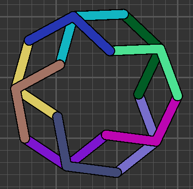
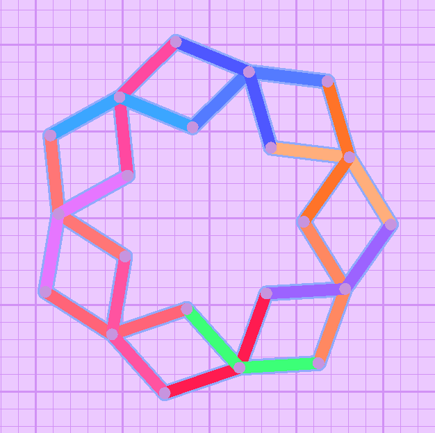
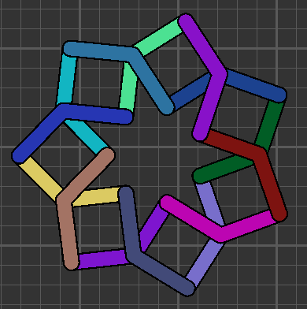
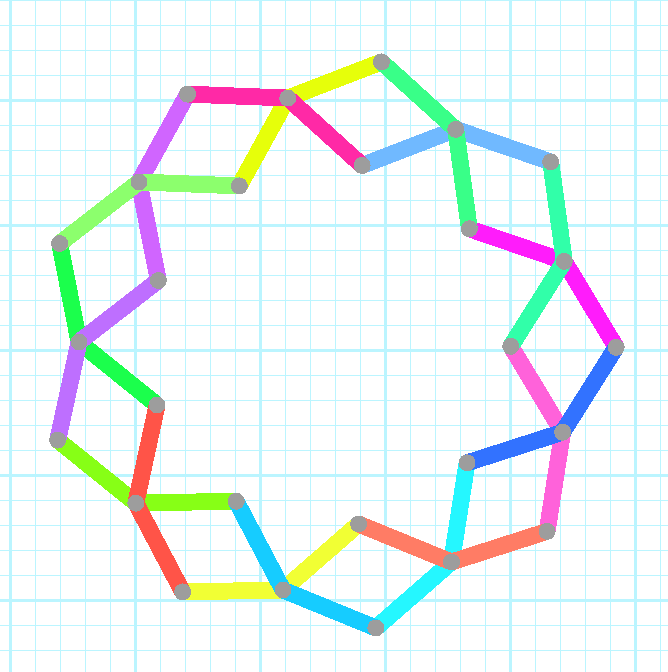
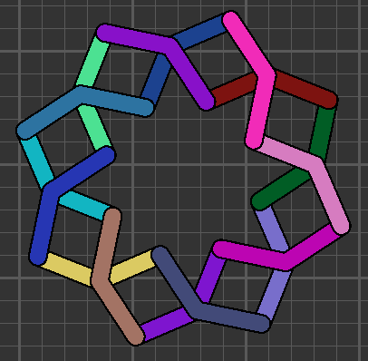
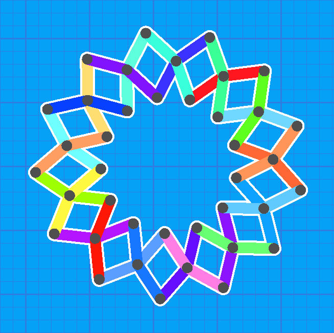
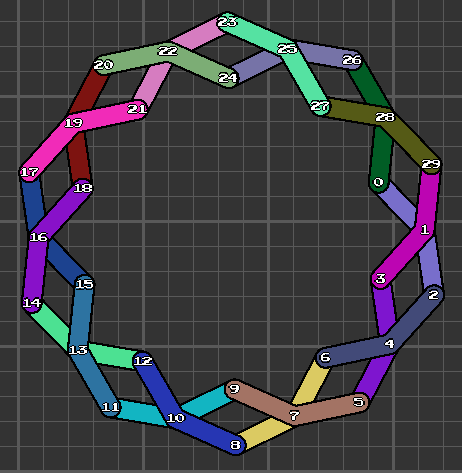
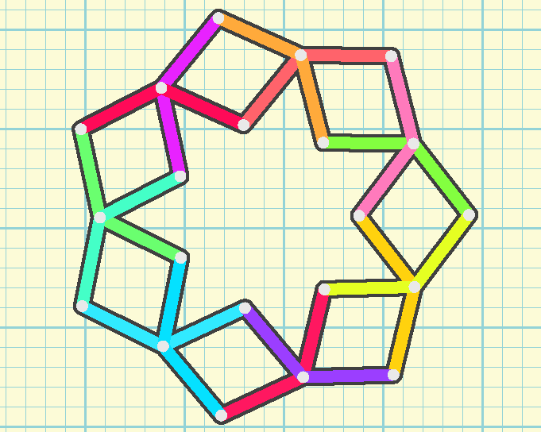